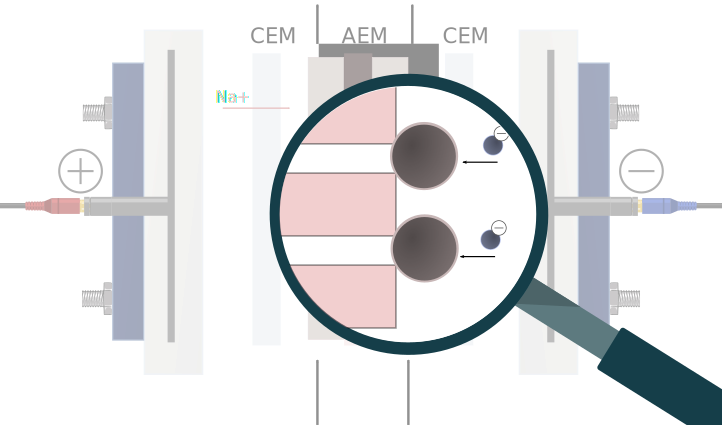
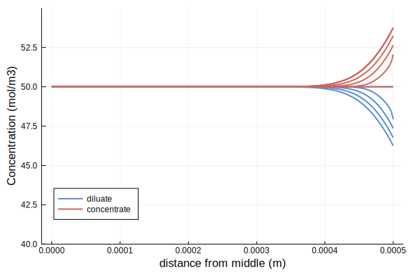
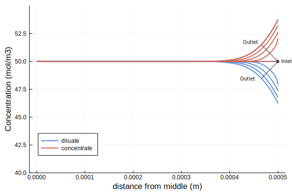
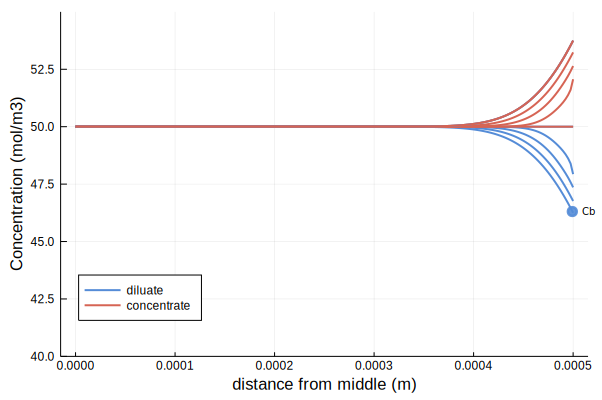
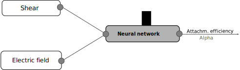

Enhancing physics-based models with machine learning to
predict fouling in electrodialysis.
Bram De Jaegher
Enhancing physics-based models with machine learning to predict fouling in electrodialysis

Bram De Jaegher, Ingmar Nopens, Wim De Schepper, Arne Verliefde
Euromembrane 2021

How does electrodialysis work?
How does electrodialysis work?
How does electrodialysis work?
How does electrodialysis work?
Why research on electrodialysis?
Why research on electrodialysis?
Why research on electrodialysis?
Fouling is a problem for electrodialysis.
Fouling is a problem for electrodialysis.
Fouling is a problem for electrodialysis.
Fouling is a problem for electrodialysis.

Fouling is a problem for electrodialysis.
- ↑ energy consumption
- ↑ cleaning cost
- ↑ membrane replacement
The objective is developing a virtual electrodialysis stack.
- Process optimisation
- Fouling reduction
The battle of two modelling paradigms.
Mechanistic models:
→ rely on an accurate description of physics/chemistry.
- physics tend to be complex...
- ...with a high computational cost.
data-driven
- No assumptions one physics
- Computers learn a relationship
These models can be quite unintelligent.
But why not combine these two paradigms?
Our hybrid solution to simulate electrodialysis fouling.
The flux of foulants is estimated with physics.
Solving hydrodynamics and ion transport:
Simulation of basic ED model.
Solving hydrodynamics and ion transport:

Simulation of basic ED model.
Solving hydrodynamics and ion transport:

Simulation of basic ED model.
Solving hydrodynamics and ion transport:

The flux of foulants is estimated with physics.
Solving hydrodynamics and ion transport:
Along with the flux (collisions) of foulants to the membrane:
Which depends on the properties of the foulants.
Simulations for a change in current.
Adding a neural network to learn attachment.
Adding a neural network to learn attachment.

The model is trained with 3 time series.
For a change in electrical current.
The model is tested on new data...
...and can predict a change in foulant concentration.
Analysing the neural network.
The evolution of $\alpha$ vs. the resistance of the fouling layer (size).
Take home messages
- Electrodialysis is an awesome technology.
- Suffers from fouling.
- Our model predicts fouling as a function of process settings...
- This model helps to improve electrodialysis and save costs.
- More fundamental research needed to understand and simulate electrodialysis.
Enhancing physics-based models with machine learning to predict fouling in electrodialysis
Bram De Jaegher, Ingmar Nopens, Wim De Schepper, Arne Verliefde
Euromembrane 2021